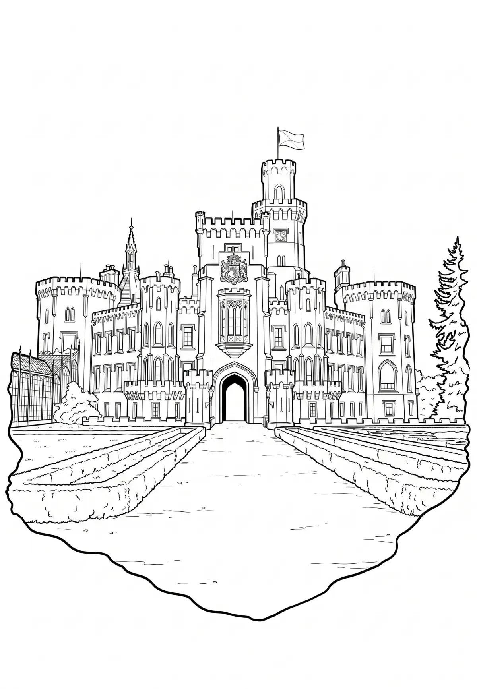

Státní zámek Hluboká
Zámek Hluboká nad Vltavou (německy Schloss Frauenberg) se nachází ve stejnojmenném městě, ležícím asi 9 km severně od Českých Budějovic. Je veřejnosti přístupný a patří k turisticky nejatraktivnějším památkám v Česku. Zámek je od roku 1947 ve vlastnictví státu a v současnosti je spravován Národním památkovým ústavem.
Více na Wikipedii